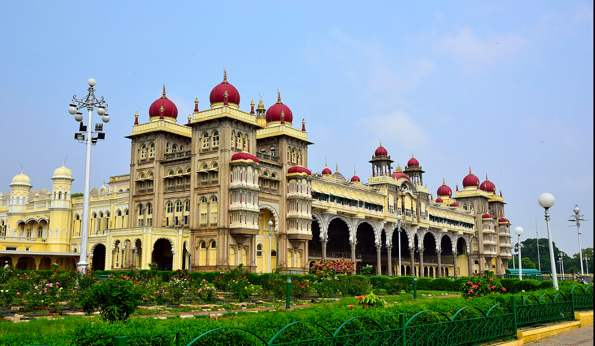

Mysore Palace, also known as the Amba Vilas Palace, is a historical palace located in the city of Mysore, Karnataka. It is one of the most famous tourist attractions in India, known for its Indo-Saracenic architecture and stunning interiors.
Designed by Henry Irwin, an English architect, the style is that of Indo-Saracenic architecture, with elements from Islamic, Rajput, and Gothic architecture styles. It is a three-story, gray granite structure, about 75m long and about 48m wide. There are square towers, five stories tall, at each of the cardinal points, topped with pink domes. The tallest tower, 44m tall is at the centre of the palace and is topped with a gold-plated dome.